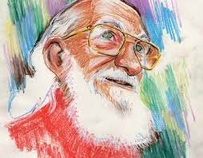
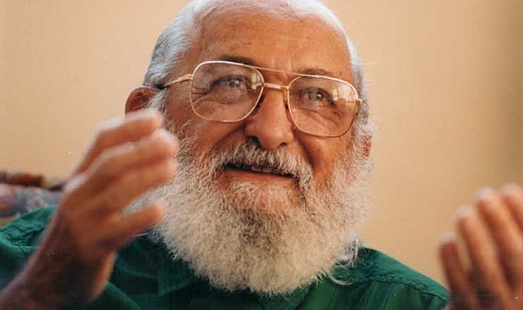

Semana Paulo Freire
Quem foi Paulo Freire?
Paulo Freire (1921-1997) foi um dos mais importantes pedagogos brasileiros. O educador criou um método de ensino inovador acreditando que a educação era uma ferramenta essencial para a transformação da sociedade

BIOGRAFIA
Paulo Reglus Neves Freire foi um educador e filósofo brasileiro. É considerado um dos pensadores mais notáveis na história da pedagogia mundial, tendo influenciado o movimento chamado pedagogia crítica. É também o Patrono da Educação Brasileira
Contribuição para a educação
Paulo Freire (1921-1997) foi um dos mais importantes pedagogos brasileiros. O educador criou um método de ensino inovador acreditando que a educação era uma ferramenta essencial para a transformação da sociedade.
REPORTAGEM
Rejeitado pela atual administração, Paulo Freire está entre os autores mais citados em trabalhos acadêmicos do mundo. Esta reportagem foi publicada originalmente no dia 12 de janeiro de 2019 e republicada em 19 de setembro de 2021, data do aniversário de cem anos do nascimento de Paulo Freire.
CARICATURA
